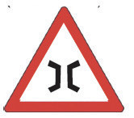
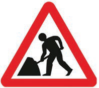
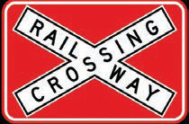

Questions
Based on the poem, what precautions should you take when crossing the road?
Road safety signs are used to direct road users when using the road. Examples of road safety signs include traffic lights, pedestrian crossings, children crossings, railway crossings, cyclist lanes, bus stops, and road work ahead signs. It is important to observe road safety signs when using the road for your safety.
Exercise 1
1.
Why is it important to observe road safety signs?
2.
By considering the knowledge on road safety signs, how can you assist your friend who wants to cross the road?
3.
Explain the safety measures you would take when you come across or see the following road safety signs:

(a)Narrow bridge.
(b)Road work ahead.
(c)Railway crossing ahead.